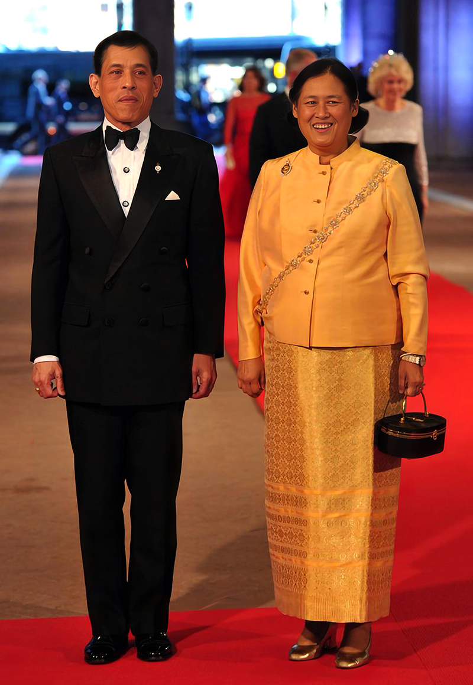
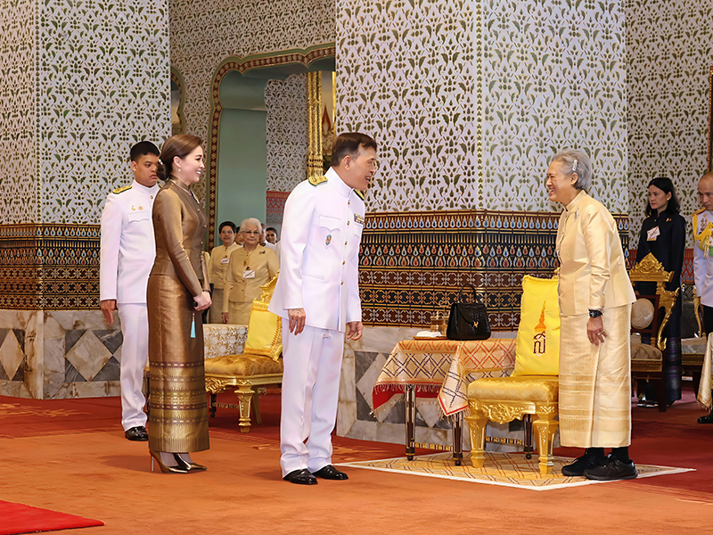

main.jpg800x1160



สมเด็จพระกนิษฐาธิราชเจ้า กรมสมเด็จพระเทพรัตนราชสุดา ฯ สยามบรมราชกุมารี มีพระราชปณิธานแน่วแน่ในการเจริญรอยตามเบื้องพระยุคลบาทพระบาทสมเด็จพระบรมชนกาธิเบศร มหาภูมิพลอดุลยเดชมหาราช บรมนาถบพิตร และสมเด็จพระนางเจ้าสิริกิติ์ พระบรมราชินีนาถ พระบรมราชชนนีพันปีหลวง โดยนับตั้งแต่พุทธศักราช ๒๕๒๐ ทรงริเริ่มโครงการด้านการศึกษาและการพัฒนาคุณภาพชีวิต เพื่อช่วยเหลือเด็กและเยาวชนในพื้นที่ห่างไกล สนับสนุนการสร้างอาชีพในชุมชน ส่งเสริมภูมิปัญญาท้องถิ่น และการฟื้นฟูอนุรักษ์ทรัพยากรธรรมชาติ ทรงให้ความสำคัญใน “การพัฒนาคน” ซึ่งเป็นรากฐานของการพัฒนาประเทศ
ด้วยสายพระเนตรกว้างไกล ทรงนำความรู้สมัยใหม่ วิทยาศาสตร์ และเทคโนโลยีมาใช้อย่างเหมาะสม เพื่อให้ประชาชนสามารถยกระดับคุณภาพชีวิต และปรับตัวต่อการเปลี่ยนแปลงของโลกได้อย่างยั่งยืน ซึ่งสอดคล้องกับพระราชดำริ “เข้าใจ เข้าถึง พัฒนา” ของสมเด็จพระบรมชนกนาถ
สมเด็จพระกนิษฐาธิราชเจ้า กรมสมเด็จพระเทพรัตนราชสุดา ฯ สยามบรมราชกุมารี ทรงปฎิบัติพระราชกรณียกิจนานัปการด้วยพระวิริยะอุตสาหะมาอย่างต่อเนื่องยาวนาน ตั้งแต่รัชสมัยพระบาทสมเด็จพระบรมชนกาธิเบศร มหาภูมิพลอดุลยเดชมหาราช บรมนาถบพิตร จวบจนถึงปัจจุบัน ได้ทรงสืบสาน รักษา และต่อยอด โครงการอันเนื่องมาจากพระราชดำริในหลายด้านอย่างสม่ำเสมอตามพระบรมราโชบายพระบาทสมเด็จพระเจ้าอยู่หัว จนเกิดผลสำเร็จเป็นรูปธรรมต่อคุณภาพชีวิตของประชาชนในพื้นที่ต่าง ๆ ทั่วประเทศ งานพัฒนาดังกล่าวครอบคลุมทั้งด้านการศึกษา โภชนาการ สาธารณสุข การอนุรักษ์ทรัพยากรธรรมชาติ การส่งเสริมอาชีพ ตลอดจนการประยุกต์ใช้วิทยาศาสตร์และเทคโนโลยีเพื่อขยายโอกาสให้แก่ประชาชน โดยมีเป้าหมายสำคัญคือการยกระดับคุณภาพชีวิต และเสริมความเข้มแข็งให้ชุมชนสามารถพึ่งพาตนเองได้อย่างมั่นคงและยั่งยืน
การทรงงานด้านการพัฒนาได้ยึดหลักความเข้าใจบริบทของพื้นที่ การรับฟังปัญหาอย่างรอบด้าน และการมีส่วนร่วมของประชาชนในทุกขั้นตอน โครงการต่าง ๆ จึงมิได้มุ่งเพียงแก้ไขปัญหาเฉพาะหน้า หากแต่เน้นการวางรากฐานและสร้างกระบวนการเรียนรู้ที่ต่อเนื่องเพื่อผลในระยะยาว การส่งเสริมให้โรงเรียนสามารถผลิตอาหารกลางวันได้เอง การพัฒนาระบบน้ำสะอาดในพื้นที่ทุรกันดาร การจัดตั้งศูนย์เรียนรู้และศูนย์พัฒนาต่าง ๆ รวมถึงการสนับสนุนอาชีพที่เหมาะสมกับภูมิสังคม ล้วนสะท้อนแนวทางการพัฒนาที่คำนึงถึงความยั่งยืนมากกว่าความสำเร็จระยะสั้น